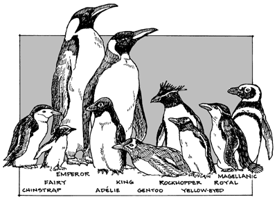

Grouping by Relevance

Intuition
Many axioms are assigned the same relevance score
Group axioms of equal relevance and do combinations of groups
Definition
Maximal number of groups is:
TotalTime log
2
(--------------------------) TimePerAxiomReducedProblem
Consider relevance scores in decreasing number of decimal places (minimum 1)
Use conjecture, hypothesis, and an appropriate number of top groups in all axiom reduced problems
Use combinations of groups in increasing order of probablity